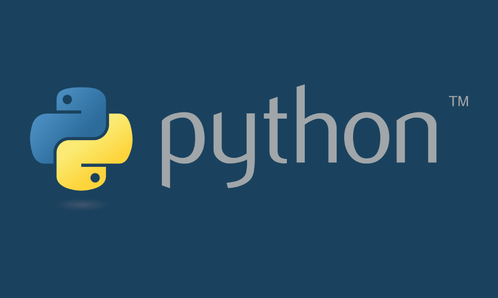
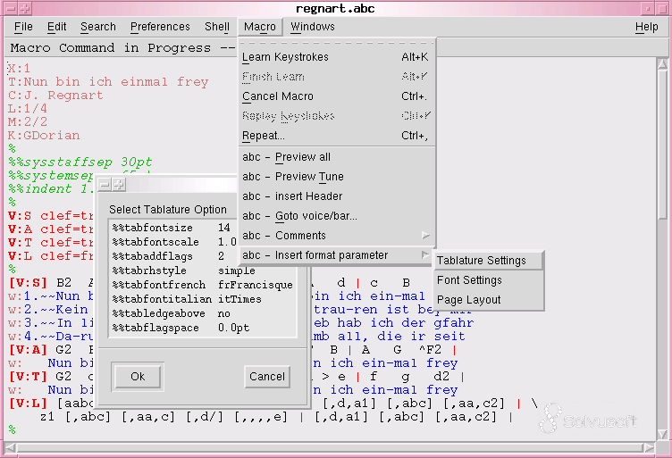

Desarrollo web
Puede utilizarse para construir aplicaciones y servicios web.
Python es un lenguaje de programación de propósito general. Su primera versión pública apareció en 1991 y desde entonces ha continuado evolucionando.

Python es un lenguaje utilizado para crear programas, páginas web, herramientas, automatizaciones y muchas otras aplicaciones.
Una de sus características más conocidas es que utiliza una sintaxis relativamente sencilla de leer. Esto ayudó a que fuera adoptado tanto por personas que comenzaban a programar como por desarrolladores con experiencia.
Puede utilizarse para construir aplicaciones y servicios web.
Permite crear programas que realizan tareas repetitivas.
Cuenta con herramientas utilizadas para trabajar con información y análisis.
Su sintaxis permite utilizarlo como lenguaje para aprender programación.
Python pasó por distintas etapas y versiones. Con el tiempo aparecieron organizaciones, comunidades y proyectos que ayudaron a mantener y ampliar el lenguaje.

Lenguajes de programación